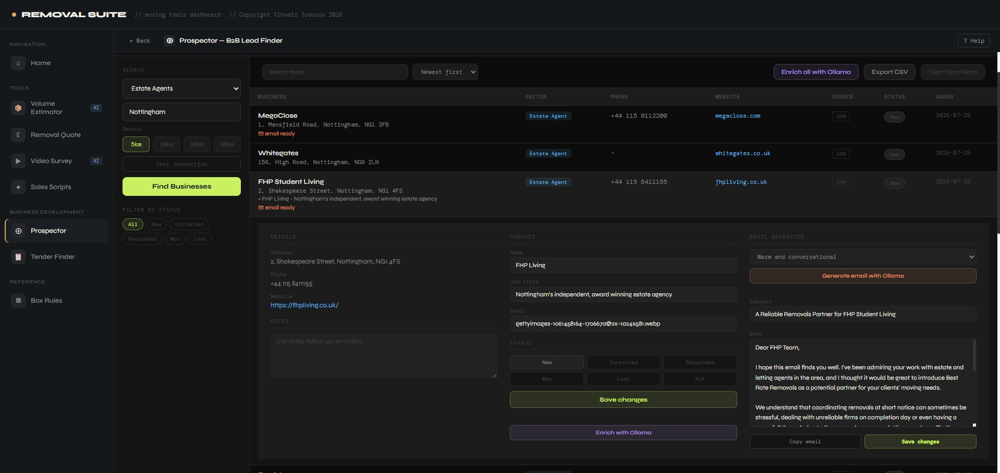
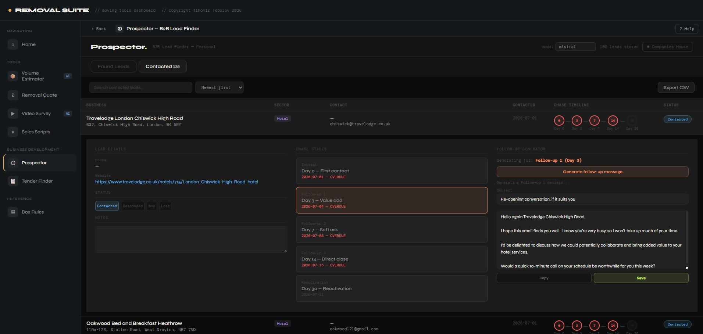

Outbound / Personal IP
An experiment in finding B2B leads myself, so I rely less on paid lead sites. It's still a work in progress, not a finished product.
How it flows
All our lead generation depended on paid inbound sources, comparison sites that charge a premium for each lead. We had no say over how many leads came in, who they were, or when.
I wanted an outbound channel that didn't depend on paid lead providers. I built it as a proper sales pipeline, not a plain contact list, so I could test it, tweak it and expand it over time. I didn't want a one-off scraper.
Lead discovery uses open map data instead of a paid source. An AI model reads each prospect's website and drafts a tailored cold email. A pipeline then tracks each prospect through a five-stage chase timeline that follows how a real sales process moves, instead of sending everything in one blast.
I built it to run on my own computer, as my own project, separate from the company's internal tools. It's still being developed and isn't a finished, deployed system.
At the moment Prospector gives me an outbound lead channel that doesn't rely on paid comparison sites, with a pipeline built around how sales conversations actually go. It's early. I'm not claiming a measured result yet, and I'd rather say so than overstate it.
Free, open data can replace paid sources for finding leads if you're willing to build the enrichment layer yourself. The harder problem wasn't finding prospects. It was writing outreach that doesn't sound generic.
Engineering Decisions
In the Field


Next